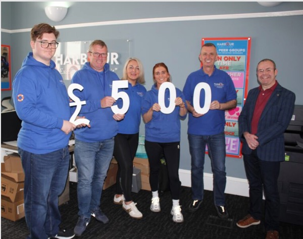

Treasure Chest
THE COMMUNITY TREASURE CHEST
One of the main objectives of the Rotary Club of Ayr is to support its local community through its Registered Charity, the Rotary Club of Ayr Benevolent Fund (SC013822).
To this end, it will partner with local charities to help them raise funds for their work or design a project that addresses a specific need. It also aims to support individuals with grants to enable them to pursue educational and other opportunities for their personal well-being.
What does this mean for the inhabitants of South Ayrshire?
Do you run a local charity or represent perhaps a local voluntary
group trying to develop an idea that needs more funding or do you,
as an individual, have a personal project in mind that might benefit
from some funding? If so, we may be able to help.
We offer funding of up to £250.
Please click on this link to be taken to our online
application form.
The application will be considered by the Treasure Chest Team who will assess your request and make a recommendation to the Rotary Club of Ayr Council. You will be informed by email if you have been successful or not.
You may receive the full grant of £250 or a proportion of that amount. As the Club Council meets every two months, please be patient.

A recent award was made to Harbour Ayrshire. Read their story.